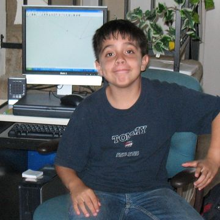

|  |
Angel PerezThis is my personal page where I am going to practice my craft |
Bachelor's degree in Computer Engineering
California State University-Long Beach - Long Beach, CA
September 2016 to December 2020